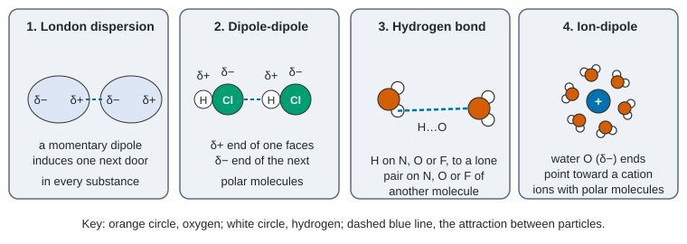

Intermolecular and Interparticle Forces
Particles attract each other by London dispersion forces (all particles, stronger with more electrons), dipole-dipole forces (polar molecules), hydrogen bonds (H on N, O or F to a lone pair on N, O or F) and ion-dipole forces.
Part 1 · Hook
Why this matters
Part 2 · Before you start
What this builds on
Part 3 · Prerequisite check
Quick check before you start
1. Which molecule is polar?
- NH₃
- CO₂
- CH₄
- BF₃
Show the answer
NH₃ is trigonal pyramidal with a lone pair, so its N–H bond dipoles do not cancel. The other three are symmetric and their bond dipoles cancel.
- Correct: NH₃:
- CO₂:
- CH₄:
- BF₃:
2. Which bond is the most polar?
- O–H
- C–H
- C–C
- Cl–Cl
Show the answer
O and H differ most in electronegativity, so the shared electrons sit closest to O.
- Correct: O–H:
- C–H:
- C–C:
- Cl–Cl:
3. By Coulomb's law, how does the attraction between two opposite charges change as they move closer?
- It increases
- It decreases
- It stays the same
Show the answer
The force grows as the distance between the charges shrinks.
- Correct: It increases:
- It decreases:
- It stays the same:
Part 4 · See it
See it first

Part 5 · Step by step
How it works, step by step
- Electrons in every particle shift from moment to momentmomentary dipoles attract their neighbors: London dispersion forces act in every substance
- More electrons, farther from the nucleus, make an electron cloud easier to distortdispersion forces grow with polarizability, so boiling points rise down a group
- A polar molecule has a permanent δ+ end and δ− endneighbors line up and add dipole-dipole forces
- H bonded to N, O or F carries a large, exposed δ+it attracts a lone pair on N, O or F of another molecule: a hydrogen bond
- Stronger attractions hold particles togethermore energy is needed to separate them, so melting and boiling points rise
Part 6 · Key ideas
Key ideas
- Intermolecular forces act between particles; covalent bonds act inside them. Boiling and melting never break covalent bonds.
- Dispersion forces act in all substances and grow with the number of electrons and contact area, not with mass as such.
- Hydrogen bonds need H on N, O or F in one molecule and a lone pair on N, O or F in another.
- To compare boiling points, name every force in both substances, then decide which attraction is larger.
Part 7 · Misconception
A common mistake
The wrong idea: The heavier substance always boils higher, because heavier molecules are harder to move.
What actually happens: Mass is not the cause. Butane, acetone and 1-propanol have nearly the same molar mass but boil at −0.5, 56 and 97 °C, because acetone adds dipole-dipole forces and 1-propanol adds hydrogen bonds.
Part 8 · Check yourself
Check yourself
Exam-style questions. Anything you miss goes into your review queue.
Data table
Three liquids of nearly equal molar mass
A student looks up three compounds with nearly the same molar mass.
| Compound | Structure | Molar mass (g/mol) | Electrons per molecule | Boiling point (°C) |
|---|---|---|---|---|
| Butane | CH₃CH₂CH₂CH₃ | 58.12 | 34 | −0.5 |
| Acetone | (CH₃)₂C=O | 58.08 | 32 | 56.1 |
| 1-Propanol | CH₃CH₂CH₂OH | 60.10 | 34 | 97.2 |
1. Which claim about the data is best supported?
- Molar mass cannot account for the boiling points, because the three are nearly equal in mass yet differ by about 98 °C.
- Molar mass accounts for the boiling points, because 1-propanol is the heaviest and boils highest of the three compounds.
- Electron count accounts for the boiling points, because acetone has the fewest electrons and boils the lowest of the three.
- Boiling point falls as molar mass rises, because heavier molecules move more slowly and escape the liquid less often.
Show the answer
The masses differ by about 2 g/mol and the electron counts by at most 2, but the boiling points span 98 °C. Something other than mass or dispersion forces must differ: the kinds of attraction.
- Correct: Molar mass cannot account for the boiling points, because the three are nearly equal in mass yet differ by about 98 °C.: Right: nearly equal masses with very different boiling points rule out mass as the explanation.
- Molar mass accounts for the boiling points, because 1-propanol is the heaviest and boils highest of the three compounds.: This is the "molar mass alone" error. 1-Propanol is only 2 g/mol heavier than butane, far too little to explain a 98 °C difference.
- Electron count accounts for the boiling points, because acetone has the fewest electrons and boils the lowest of the three.: Acetone has the fewest electrons but boils in the middle, above butane, so electron count does not set the order here.
- Boiling point falls as molar mass rises, because heavier molecules move more slowly and escape the liquid less often.: The data show no such trend, and the masses are too close for mass to set the order in either direction.
2. Why does acetone boil about 57 °C higher than butane?
- Acetone is polar, so dipole-dipole forces add to its dispersion forces; butane is nonpolar and has dispersion forces alone.
- Acetone forms hydrogen bonds between its molecules through the lone pairs on its oxygen atom, which butane, a molecule with no oxygen, lacks.
- Acetone has more electrons than butane, so its London dispersion forces are much stronger than the dispersion forces between butane molecules.
- Boiling acetone breaks its strong C=O double bond, which takes more energy than breaking the C–C bonds in butane.
Show the answer
Acetone's C=O bond makes the molecule polar, so its molecules also attract by dipole-dipole forces. Butane is nonpolar. With similar electron counts, the extra dipole-dipole attraction explains the higher boiling point.
- Correct: Acetone is polar, so dipole-dipole forces add to its dispersion forces; butane is nonpolar and has dispersion forces alone.: Right: the extra kind of attraction is dipole-dipole.
- Acetone forms hydrogen bonds between its molecules through the lone pairs on its oxygen atom, which butane, a molecule with no oxygen, lacks.: Acetone has an O atom but no H bonded to O, N or F, so its molecules cannot hydrogen-bond to each other.
- Acetone has more electrons than butane, so its London dispersion forces are much stronger than the dispersion forces between butane molecules.: Acetone has 32 electrons, two fewer than butane, so dispersion forces cannot explain its higher boiling point.
- Boiling acetone breaks its strong C=O double bond, which takes more energy than breaking the C–C bonds in butane.: Boiling separates whole molecules; no covalent bond, C=O or C–C, breaks when a liquid boils.
Data table
Halogens and noble gases
Boiling points of two families of nonpolar substances.
| Substance | Electrons per particle | Boiling point (°C) |
|---|---|---|
| F₂ | 18 | −188 |
| Cl₂ | 34 | −34 |
| Br₂ | 70 | 59 |
| I₂ | 106 | 184 |
| Ne | 10 | −246 |
| Ar | 18 | −186 |
| Kr | 36 | −153 |
3. Which explanation accounts for the rise in boiling point from F₂ to I₂?
- More electrons in larger electron clouds make the molecules more polarizable, so dispersion forces grow stronger.
- Each molecule down the group is more polar than the one above it, so the dipole-dipole forces between neighboring molecules grow stronger.
- The covalent bond inside each molecule grows stronger down the group, so more energy is needed to boil it.
- Heavier molecules are pulled down by gravity more strongly, so they need more energy to escape as a gas.
Show the answer
Halogen molecules are nonpolar, so their only attraction is London dispersion. From 18 to 106 electrons, the clouds get larger and easier to distort, so the momentary dipoles and the attractions get stronger.
- Correct: More electrons in larger electron clouds make the molecules more polarizable, so dispersion forces grow stronger.: Right: polarizability, from more electrons in more shells, sets the dispersion strength.
- Each molecule down the group is more polar than the one above it, so the dipole-dipole forces between neighboring molecules grow stronger.: X–X molecules of one element have no polar bonds, so there are no permanent dipoles at all.
- The covalent bond inside each molecule grows stronger down the group, so more energy is needed to boil it.: The bonds inside these molecules do not break on boiling, and their strengths do not follow the boiling points: F–F (159 kJ/mol) is weaker than Cl–Cl (243 kJ/mol), yet F₂ boils lower.
- Heavier molecules are pulled down by gravity more strongly, so they need more energy to escape as a gas.: Gravity on a single molecule is negligible; the mass-only argument skips the real cause, polarizability.
Particle view
Four water molecules
Key: orange circle, oxygen atom; white circle, hydrogen atom; dashed lines W, X, Y and Z, possible attractions between molecules.
4. Which labeled dashed lines correctly show hydrogen bonds? Select all that apply.
- W
- X
- Y
- Z
Show the answer
A hydrogen bond runs from an H that is bonded to O on one molecule to the O (with its lone pairs) of a different molecule. W and X do this; Y joins two O atoms and Z joins two H atoms.
- Correct: W: Right: an H on one molecule to the O of another.
- Correct: X: Right: an H on one molecule to the O of another.
- Y: This joins two O atoms, both δ−, which repel; there is no H between them.
- Z: This joins two H atoms, both δ+, which repel; a hydrogen bond needs a lone pair on N, O or F as the partner.
5. Why can line Y not be a hydrogen bond?
- It connects two partially negative oxygen atoms, which repel each other, and it has no H atom bridging them.
- It is drawn too long; a hydrogen bond forms between atoms that touch in a diagram.
- It connects two different molecules, and a hydrogen bond forms between atoms of one molecule.
- Oxygen atoms are too large to take part in hydrogen bonds, unlike nitrogen and fluorine atoms, which are smaller.
Show the answer
A hydrogen bond needs an H with a large δ+ (bonded to N, O or F) on one side and a lone pair on N, O or F on the other. Y joins two δ− O atoms, so it is a repulsion, not a hydrogen bond.
- Correct: It connects two partially negative oxygen atoms, which repel each other, and it has no H atom bridging them.: Right: like partial charges repel, and the bridging H is missing.
- It is drawn too long; a hydrogen bond forms between atoms that touch in a diagram.: Length in a sketch is not the test; the atoms at the two ends are.
- It connects two different molecules, and a hydrogen bond forms between atoms of one molecule.: Hydrogen bonds are always between different molecules (or distant parts of a large one); an attraction inside a small molecule is a covalent bond, not a hydrogen bond.
- Oxygen atoms are too large to take part in hydrogen bonds, unlike nitrogen and fluorine atoms, which are smaller.: Oxygen is one of the three atoms, N, O and F, that take part in hydrogen bonds.
6. When this sample of water boils, which interactions are overcome?
- Hydrogen bonds such as W and X; the O–H bonds inside each molecule stay intact.
- The O–H covalent bonds inside each molecule, which releases hydrogen and oxygen atoms into the vapor.
- Both the hydrogen bonds and the O–H covalent bonds, since boiling adds a great deal of energy.
- Neither kind: boiling speeds up the molecules, but the attractions between them stay as they were in the liquid.
Show the answer
Boiling separates whole water molecules from their neighbors by overcoming the hydrogen bonds (and dispersion forces) between them. Steam is still H₂O.
- Correct: Hydrogen bonds such as W and X; the O–H bonds inside each molecule stay intact.: Right: attractions between molecules are overcome; covalent bonds are not.
- The O–H covalent bonds inside each molecule, which releases hydrogen and oxygen atoms into the vapor.: This is the "covalent bonds break on boiling" error; steam is made of H₂O molecules, not separate atoms.
- Both the hydrogen bonds and the O–H covalent bonds, since boiling adds a great deal of energy.: The O–H bonds are about twenty times stronger than the attractions between molecules and stay intact at 100 °C.
- Neither kind: boiling speeds up the molecules, but the attractions between them stay as they were in the liquid.: Molecules in the vapor are far apart, so the attractions that held them in the liquid have been overcome.
7. Which attraction acts between the particles of every substance?
- London dispersion forces
- Dipole-dipole forces
- Hydrogen bonds
- Ion-dipole forces
Show the answer
Every particle has electrons that can form momentary dipoles, so dispersion forces act between all particles. The others need polar molecules, N–H, O–H or F–H groups, or ions.
- Correct: London dispersion forces: Right: momentary dipoles form in every electron cloud.
- Dipole-dipole forces: These need permanent dipoles, so they act between polar molecules.
- Hydrogen bonds: These need H bonded to N, O or F on one molecule and a lone pair on N, O or F on another.
- Ion-dipole forces: These need an ion and a polar molecule together.
Part 9 · Summary
Summary
Part 10 · Up next
What comes next
Part 11 · Connections